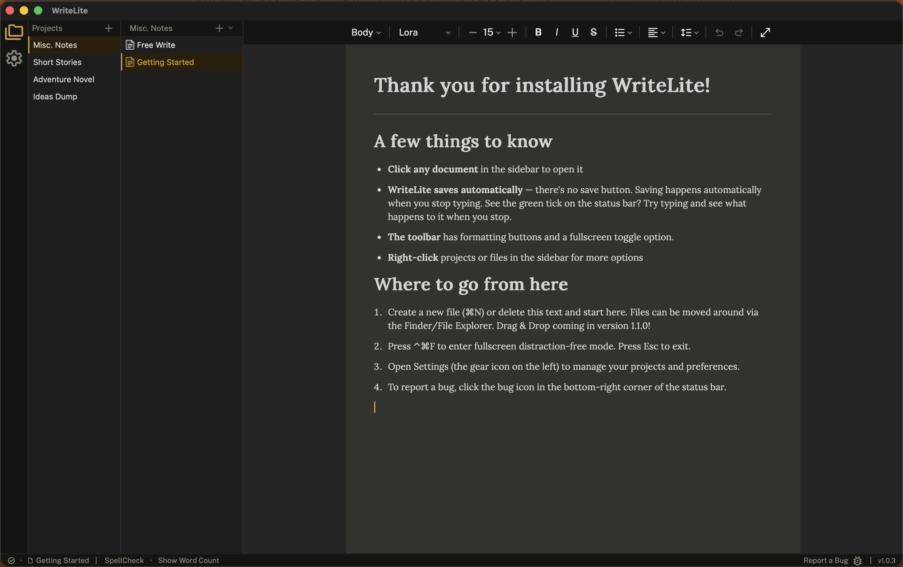

Download for free and get writing in under a minute

WriteLite is built by one developer who is also a writer. It is a tool with a single conviction — let the writer get their ideas out as fast as they can type them. No waiting for a load screen. No wondering where the files went.
Most writing software does too much, starts too slowly, or insists on keeping your files in a format it controls. WriteLite will not.
WriteLite targets a startup time under half a second — faster than most apps finish their loading screens. When you have an idea, the gap between thought and page matters. WriteLite makes that gap as small as possible. The speed of typing meets the immediacy of pad and pen. WriteLite is ready when you are.
Every document is saved as a .wlite file— markdown text underneath, which means any word processor or writing app on any computer can open it. There is no lock-in. Your files belong to you, not to WriteLite.
WriteLite does not care where your files live. It opens them, saves them, and asks nothing else. What you write is already a file on your computer.
Put your project folders in the cloud or save them to a USB for easy backup, and tell WriteLite where you're keeping them.
Pour your stream of consciousness onto the page in a way that suits you. Use Full-Screen mode to make distractions vanish.
Writing shouldn't cost a subscription, so WriteLite is free with no expectations, no obligations, and nothing withheld. Built by one writer who codes, consider this a gift from me to you. The development of WriteLite is sustained by donations alone. It has no locked formats or paywalls and does not store any of your data on the cloud. Your files belong to no platform.
What you pay for is what you're asking the world to make more of. If this app gave you something, there's a way to give something back. No pressure, but the door is open. This is how I keep the lights on.
WriteLite has no server, no account requirement, and no telemetry. Nothing you write leaves your machine. WriteLite will never read your documents, request access to your files beyond what you open yourself, or store anything outside your own disk. What you write is yours, completely and permanently.
A cleaner UI, move files around by dragging and dropping, add words and names to a custom dictionary and expanded preference capabilities.
Use the search bar to find files quickly.
An alternative focus mode to full-screen. Type scroll shows only 1-10 lines of text on the screen at a time and hides to UI completely.
Drag and drop from outside WriteLite into the file tree to import files
Set a time or word count goal and track your progress in the status bar.
Support importing from .doc files; exporting to .doc and .pdf.
Right-click the desktop or a folder and choose New → WriteLite Document.
Eight distinct themes to make WriteLite feel like yours.
This patch brings a new welcome experience. The first time you open WriteLite it now walks you through the app and lets users set their theme preference from the start.
WriteLite has a Discord Community Server where writers of all genres, styles and experience levels to gather, share, and discuss the craft of writing. Competitions will be hosted in the future.
Following the WriteLite Instagram page is a great way to keep track of updates, connect with other writers or share snippets of your work.
These are both places where you can reach out to the developer directly with questions, suggestions and feedback.